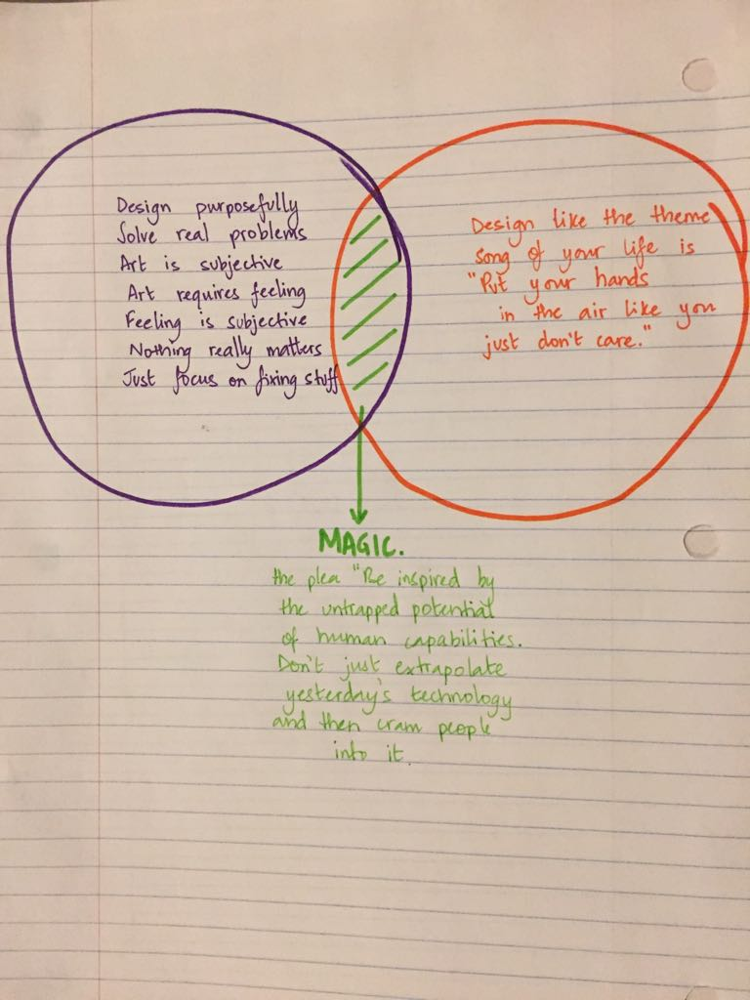

My understanding of
"A brief rant on the future of Interaction Design"
by Bret Victor
tl;dr
i. Interaction is important.
ii. Current realisation promotes human hands to be the only point of interaction that's actually taking place between technology and humans.
iii. Bret doesn't mind that. In fact, he loves the entire plethora of possibilities that lie between the usage of hands and technology.
iv. He just doesn't want to abuse the underusage of what we already don't do with our fingers/hands.
^ This point is to expand our thought processes to be able to explore our minds further than what we're currently capable of. It's basically a read-between-the-lines message that relies heavily on the importance of touch as a 'sense' that ends up affecting every other sense.The last point there also made me realise a crucial point here -
Touch as a 'sense' might even be the only factory that affects every other corresponding perception. With this one interaction, we form a judgement when experiencing the same circumstances with our eyes, ears, or even taste buds. In more cases than not, it doesn't work the other way round.
He ends it with a plea to the reader to open their minds to allow the entire body to experience the magic of interaction. Not to just far reaching upper-body limbs.
The critique
The author speaks of interaction and how we make functional use of that term when it comes to its usage in our everyday lives. Now, if we were to dive in a little deeper, we'd have to start from the root of the discussion - the two schools of thought (that were pretty visible to me).

But then again, like he mentioned : it's a choice.
However, the most substantial bit of interconnection I had with this piece was the number of times I found myself agreeing with him over the importance of feeling something (by which I refer to physically feeling something which inadvertently corelates to emotionally feeling so much more). In my opinion, that is where the experience truly does begin for most forms of interaction. And on a personal note, that is where it leaves the most lasting impression.